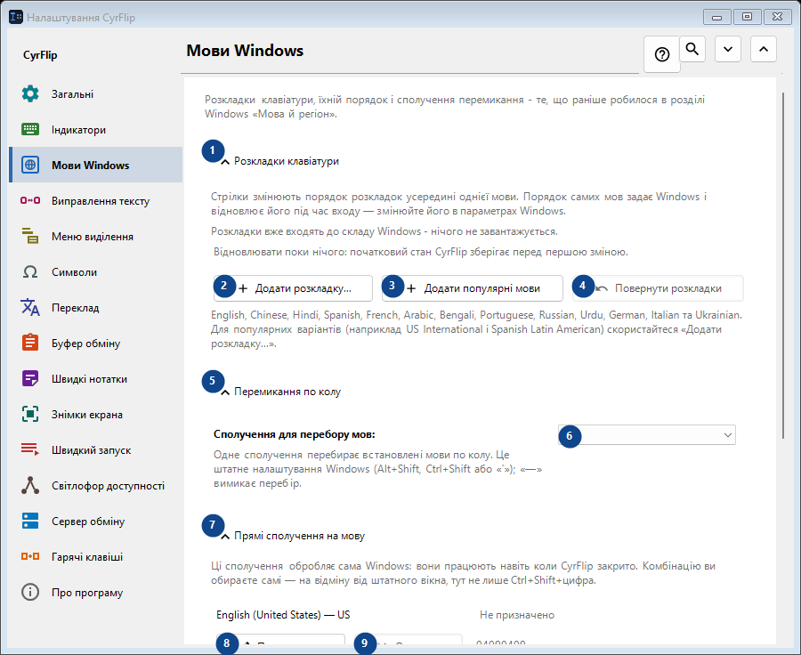
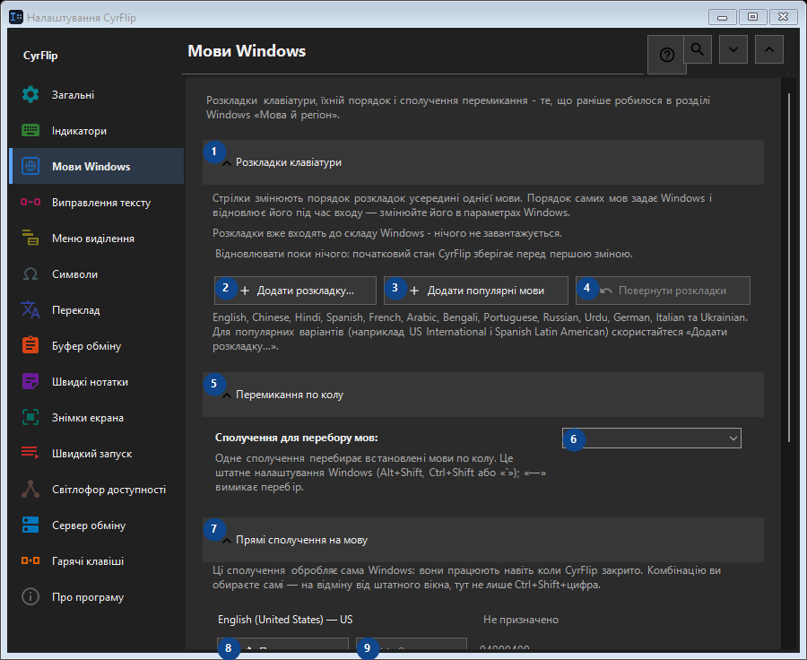

Мови Windows
Для чого це вікно
Розкладки клавіатури, їхній порядок і сполучення перемикання - те, що раніше робилося в розділі Windows «Мова й регіон».


Порядок дій
Налаштування застосовуються одразу. Обов’язкового порядку немає; користуйтеся групами нижче.
Елементи
1. Розкладки клавіатури
Скористайтеся командою, коли потрібна вказана дія. Прочитайте запит підтвердження перед згодою.
Ваші сполучення клавіш2. Додати розкладку...
Скористайтеся командою, коли потрібна вказана дія. Прочитайте запит підтвердження перед згодою.
Ваші сполучення клавіш3. Додати популярні мови
Скористайтеся командою, коли потрібна вказана дія. Прочитайте запит підтвердження перед згодою.
Ваші сполучення клавіш4. Повернути розкладки
Відновлювати поки нічого: початковий стан CyrFlip зберігає перед першою зміною. Елемент зараз недоступний. Спочатку ввімкніть функцію або виберіть запис.
Ваші сполучення клавіш5. Перемикання по колу
Скористайтеся командою, коли потрібна вказана дія. Прочитайте запит підтвердження перед згодою.
Ваші сполучення клавіш6. Сполучення для перебору мов
Виберіть або введіть значення для сусіднього підпису. Перевірте його перед продовженням.
Ваші сполучення клавіш7. Прямі сполучення на мову
Скористайтеся командою, коли потрібна вказана дія. Прочитайте запит підтвердження перед згодою.
Ваші сполучення клавіш8. Призначити... - English (United States) - US
Скористайтеся командою, коли потрібна вказана дія. Прочитайте запит підтвердження перед згодою.
Ваші сполучення клавіш9. Очистити - English (United States) - US
Скористайтеся командою, коли потрібна вказана дія. Прочитайте запит підтвердження перед згодою. Елемент зараз недоступний. Спочатку ввімкніть функцію або виберіть запис.
Ваші сполучення клавіш10. Призначити... - русский (Россия) - Russian
Скористайтеся командою, коли потрібна вказана дія. Прочитайте запит підтвердження перед згодою.
Ваші сполучення клавіш11. Очистити - русский (Россия) - Russian
Скористайтеся командою, коли потрібна вказана дія. Прочитайте запит підтвердження перед згодою. Елемент зараз недоступний. Спочатку ввімкніть функцію або виберіть запис.
Ваші сполучення клавіш12. Повернути хоткеї
Відновлювати поки нічого: початковий стан CyrFlip зберігає перед першою зміною. Елемент зараз недоступний. Спочатку ввімкніть функцію або виберіть запис.
Ваші сполучення клавіш13. Налаштування Windows
Скористайтеся командою, коли потрібна вказана дія. Прочитайте запит підтвердження перед згодою.
Ваші сполучення клавіш14. Відкрити налаштування Windows
Відкриває налаштування Windows, де встановлюється мова відображення (переклад самої Windows).
Ваші сполучення клавіш